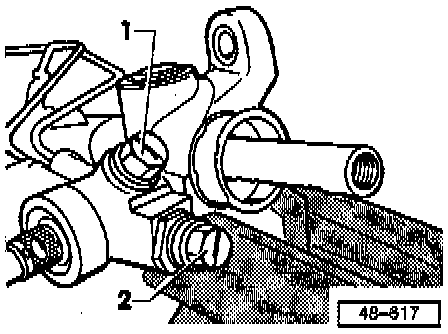
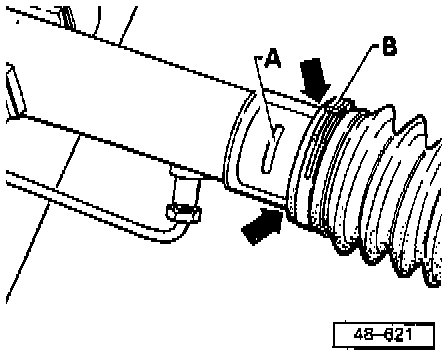
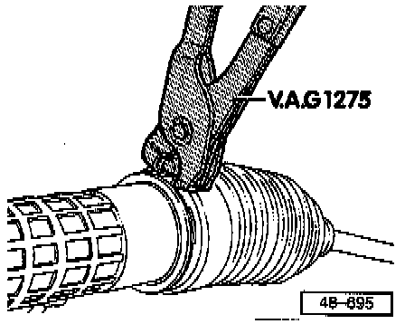

Tie Rod: Service and Repair
Tie Rods (TRW or ZF), removing and installing
REMOVAL
NOTE: Only remove and install tie rods when the steering gear has been removed.
Refer to Steering - Steering Gear - Service and Repair Procedures Service and Repair

Seal hydraulic line connections on steering gear.
1. Plastic plug
2. Plastic plug
Clean outside of steering gear in area of boot.
Open clamp and push back boot.

Hold steering gear by clamping rack in vise and remove tie rod.
If possible use open end wrench instead of vise
If using vise, remove contaminates such as metal filings, etc.
INSTALLATION

Check tie rod length dimension -a- on left tie rod and adjust if necessary.
Dimension -a- = 406 ±1 mm (15.98 ±0.04 in)
Install tie rod and lock
Tightening torque: 80 Nm (59 ft lbs)
NOTE: Only adjust toe on the right tie rod.
If the left tie rod end must be removed, adjust to dimension -a- when reinstalling.
New left tie rods must be checked for dimension -a- and, if necessary, adjusted before installation.
Check boots for wear (cuts, cracks) and check boot sealing surfaces for cleanliness.
Turn tie rod end to correct position and install boot.
Insert pressure balancing line.

NOTE: Do not damage sticker -A- when pushing boot on (TRW steering gear only).
Make sure that the pressure balancing line and the boots are correctly fitted.
Use only genuine replacement clamps -B-.

Tension clamps using pliers VAG 1275 or equivalent.

NOTE: The boots must never be twisted (arrows) when installed.